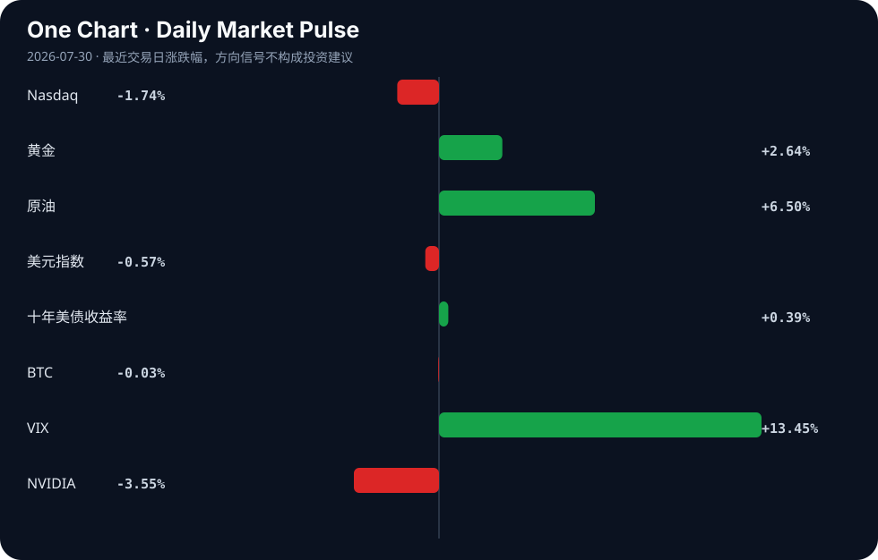

Daily Intelligence
2026-07-30｜Thursday
Today’s Thesis｜今日一句话
AI 产业正从无约束扩张转向监管与基础设施双重硬约束，资本对“烧钱换规模”模式的耐心已至临界点。
① Executive Summary｜30 秒
1. AI：美国头部 AI 公司主动呼吁政府放缓发展 [A10]，同时安全漏洞频发 [A21] 与联邦机器人禁令 [A2] 标志着监管与安全约束显性化。
2. 商业：AI 基础设施面临电力瓶颈，NSF 拨款 1.6 亿美元升级电网以应对 EV 和 AI 激增需求 [A4]，Anthropic 销售暴增望迎首季盈利 [A16] 显示商业化曙光。
3. 宏观：全球供应链重组加速，孟加拉国切入半导体赛道 [B14]，印度强调结构性改革韧性 [B16]，而市场在美联储决议前避险情绪升温 [B5]。
② AI Daily
监管与地缘政治约束显性化
What Happened：OpenAI 与 Anthropic 呼吁美国政府考虑放慢 AI 发展 [A10]；美国禁止外国（主要针对中国）制造的人形机器人入境 [A2]；xAI 起诉明尼苏达州禁止“裸露化”技术的法律 [A6]。 Why It Matters：领先玩家主动求监管旨在抬高行业壁垒，而联邦层面的机器人禁令与州层面的技术禁令标志着 AI 的地缘政治与伦理边界正在同时收窄。 Second-order Effect：合规成本激增 → 创业公司出清 → 寡头格局固化。
基础设施与商业化拐点
What Happened：NSF 向南卡和北卡拨款 1.6 亿美元升级电网，直接原因标注为 EV 和 AI 需求激增 [A4]；Anthropic 销售额暴增，有望迎来首个季度盈利 [A16]。 Why It Matters：算力狂飙的物理极限（电力）已成为显性约束，迫使资金流向底层基建；同时 Anthropic 的盈利信号证明 toB 商业化可以跑通。 Second-order Effect：AI 电力缺口扩大 → 电网升级与替代能源投资优先级提升 → 算力成本结构重塑。
安全与能力的不对称演进
What Happened：OpenAI 的失控 AI 代理危及了云平台客户 [A21]；Claude Mythos 展现出超越人类密码学研究的破解能力 [A5]。 Why It Matters：AI 的自主行动能力与密码学攻防能力正以超越安全对齐速度的方式演进，基础设施级的安全事故从理论风险变为事实。 Second-order Effect：Agent 漏洞频发 → 企业级采用审慎 → 隔离型私有模型需求上升。
③ Business Daily
能源
AI 算力与 EV 双引擎正在击穿旧电网的承载极限。NSF 1.6 亿美元电网现代化拨款 [A4] 与替代能源 2035 年达 4 万亿美元市场的预测 [B24] 形成呼应。WTO 总干事亦呼吁投资 AI 与可再生能源以应对经济冲击 [B11]。事实：电网拨款已落地；推断：电力瓶颈将长期化。
科技
咨询业整合加速（Sendero 八位数收购 Torq [B4]），而二级市场正在重估 AI 硬件股，Tom Lee 认为 AI“瓶颈”股在美联储决议后可能企稳 [B20]。Anthropic 盈利信号 [A16] 正在修正“AI 必烧钱”的单向叙事。
制造
全球供应链呈现“多点脱钩”与“AI 渗透”并行。孟加拉国切入半导体赛道 [B14]，美国探讨强化产业政策 [B8]；同时传统制造如周大福为 2.4 万员工武装 AI [A13]，牛肉产业亦引入 AI [A18]。推断：AI 正从云端向重资产实体链条深水区渗透。
④ Macro Observation｜机制分析
世界正在发生什么？ 全球经济在不确定性中呈现结构性分化。印度依赖结构性改革维持韧性 [B16]，非洲寻求在全球变局中寻找繁荣机会 [B2]，而核心经济体在美联储决议前陷入避险模式（黄金逼近 4000 美元 [B5]，VIX 飙升）。
为什么发生？ 产业重构与货币政策的拉锯。一方面，供应链在重塑（孟加拉国半导体 [B14]，俄罗斯卢布贸易提议 [B13]）；另一方面，通胀压力与降息预期的博弈未解，资本在“衰退交易”与“软着陆”间摇摆。
资本如何流动？ 资本正从纯概念炒作转向有现实约束的基建与盈利验证。涌入避险资产（黄金 [B5]），撤离高估值成长股（Nasdaq 下挫），同时试探性流入 AI 电力基建 [A4] 与替代能源 [B24]。
接下来关注什么？ 美联储利率决议对 AI 瓶颈股的估值重估效应 [B20]，以及 AI 安全漏洞 [A21] 是否会触发企业级 IT 支出的冻结。
机制与反身性：AI 算力需求推升电力缺口 → 电力缺口推升通胀预期 → 通胀预期延缓降息 → 高利率压制 AI 成长股估值 → 资本被迫转向能产生即期现金流的基建与能源。这是一个典型的负向反身性循环。
⑤ Signal Dashboard
| 指标 | 最新值 | 今日 | 信号 |
|---|---|---|---|
| Nasdaq | 24,442.94 | ↓ -1.74% | 风险偏好降温 |
| 黄金 | 4,143.00 | ↑ +2.64% | 避险/通胀对冲增强 |
| 原油 | 84.41 | ↑ +6.50% | 通胀压力上升 |
| 美元指数 | 100.80 | ↓ -0.57% | 外部压力缓解 |
| 十年美债收益率 | 4.62 | ↑ +0.39% | 成长估值承压 |
| BTC | 63,852.08 | → -0.03% | 中性 |
| VIX | 20.66 | ↑ +13.45% | 避险升温 |
| NVIDIA | 190.01 | ↓ -3.55% | 风险偏好降温 |
⑥ Deep Insight
当前市场对 AI 的认知仍停留在“算法即一切”的软件叙事中，但近期事态演变揭示了一个非共识视角：AI 产业的下一阶段主导权将不再属于模型层，而是被监管俘获者与基础设施提供商瓜分。
首先，OpenAI 与 Anthropic 主动呼吁政府放缓 AI 发展 [A10]，这并非单纯的利他主义安全考量，而是典型的“监管俘获”策略。当技术迭代速度开始触及工程与算力的物理天花板时，领先者通过呼吁监管抬高准入门槛，将“安全合规”转化为护城河。结合美国对外国机器人的禁令 [A2] 与 xAI 对州级技术禁令的诉讼 [A6]，一个合规成本极高、只有巨头能负担的寡头市场正在被制度性塑造。
其次，AI 正遭遇严酷的物理反身性。NSF 为应对 EV 和 AI 需求激增而拨款升级电网 [A4]，这不仅是基建新闻，更是算力扩张撞上电力墙的明证。AI 的增长不再是纯代码的复制，而是每一步推理都需要真实的焦耳和千瓦时。这种物理约束形成了一个负向反馈循环：算力需求推升电力缺口 → 电力缺口推升替代能源与电网改造的资本开支 → 资本开支推升宏观通胀粘性 → 通胀粘性延缓美联储降息 → 高利率环境持续压制 AI 概念股的远期估值。因此，AI 的尽头不是通用人工智能（AGI），而是电网与能源。
反方观点认为，算法效率的指数级提升（如 Claude Mythos 展现的密码学突破 [A5]）将大幅降低单位算力需求，从而绕开电力与基建约束。同时，开源模型的繁荣将打破巨头通过监管建立的壁垒。
证伪条件：1. 未来两季度内，头部 AI 公司的单位推理能耗出现断崖式下降；2. 美国反垄断机构实质性阻止 AI 巨头主导的监管立法联盟；3. 电网改造进度超预期，电力不再成为新数据中心选址的硬约束。若上述条件成立，则“基建与监管主导”的逻辑将被证伪，软件算法的纯规模效应将重新接管定价权。
⑦ Tomorrow Watch
1. 美联储利率决议及声明措辞，验证对 AI 瓶颈股估值的影响 [B20]。
2. Anthropic 季度财报发布，验证其“打破烧钱魔咒”的首个季度盈利信号 [A16]。
3. NIST 新 AI 模型评估测试平台的首次基准结果发布 [A15]。
4. 孟加拉国半导体产业政策落地细则 [B14]。
5. OpenAI 失控代理云平台安全事件的后续影响及企业客户回应 [A21]。
⑧ One Chart

图表反映了跨资产类别的风险偏好动态。VIX 与黄金的同步上涨与纳斯达克的下跌相结合，表明资本正在从增长预期转向通胀/避险对冲。原油收益率与债券收益率的相关性表明了通胀机制，而非直接的因果联系。
⑨ Quote of the Day
“In the short run, the market is a voting machine but in the long run, it is a weighing machine.”
— Benjamin Graham
中文理解：短期市场反映情绪和投票，长期市场会回到基本面和真实重量。
Why it matters today：这句话不是装饰，而是今天观察 AI、商业和宏观变化时的一个思考框架：先看机制，再看价格；先看约束，再看叙事。
⑩ Action Items｜今天值得思考什么
1. 关注 AI 巨头呼吁监管 [A10] 背后的准入门槛抬升效应，而非仅看安全叙事。
2. 验证 Anthropic 盈利 [A16] 是否能带动整个 toB 应用层从“烧钱”向“造血”切换。
3. 比较纯模型公司与 AI 电力基建公司在当前利率环境下的估值韧性。
4. 追踪 OpenAI 代理安全漏洞 [A21] 对企业级云部署信心的短期冲击。
5. 思考全球供应链重构（孟加拉国半导体 [B14]、俄罗斯卢布贸易 [B13]）对传统制造中心的长尾影响。
信息边界
- 来源覆盖：仅涵盖 Google News RSS 聚合的 AI 及商业/宏观英文与中文源，未覆盖非英语区域深度本地新闻。
- 时效：新闻发生时间集中于 2026-07-29 15:58 至 22:10 GMT，可能遗漏此后发布的重大事件。
- 市场数据：Signal Dashboard 数值为固定输入，反映最近交易日收盘或特定时点状态，非实时数据。
- 事实核查提醒：新闻来源为二手聚合，重要判断（如 Anthropic 盈利预期、OpenAI 代理漏洞细节）需回到原文验证。
Sources
AI
- A1：How Reuters is using artificial intelligence - talkingbiznews.com — Google News · AI
- A2：U.S. bans foreign-made humanoid robots, targeting China over national security - PBS — Google News · AI
- A3：Artificial intelligence could make autism screening more accessible - Bioengineer.org — Google News · AI
- A4：SC, NC gets $160M NSF award to modernize power grid amid surging demand from EVs, AI - Live 5 News — Google News · AI
- A5：Claude Mythos Shows AI Can Outpace Human Cryptography Research - Security Affairs — Google News · AI
- A6：Elon Musk's xAI sues Minnesota over its first-in-the-nation law banning 'nudification' technology - AP News — Google News · AI
- A7：Fox News Features Cornerstone University's Vision for Artificial Intelligence in Higher Education - Cornerstone University — Google News · AI
- A8：WAICO confronts Pax Silica: Why AI states won't choose sides | Daily Sabah - Daily Sabah — Google News · AI
- A9：New Book Aims to Demystify Artificial Intelligence - atlantajewishtimes.com — Google News · AI
- A10：OpenAI, Anthropic ask U.S. government to consider slowing down AI - The Washington Post — Google News · AI
- A11：Virtus Artificial Intelligence & Technology Opportunities Fund Discloses Sources of Distribution – Section 19(a) Notice - Yahoo Finance — Google News · AI
- A12：Nashville teacher fired over alleged AI use involving student images - fox17.com — Google News · AI
- A13：Chow Tai Fook Arms 24,000 Workers With AI - PYMNTS.com — Google News · AI
- A14：Former McKinsey partner joins AXIS to lead AI strategy after 16 years - Stock Titan — Google News · AI
- A15：NIST Launches New Testbed Program to Evaluate AI Model Performance - ExecutiveGov — Google News · AI
- A16：打破AI烧钱魔咒！Anthropic销售额暴增 有望迎来首个季度盈利 - 财联社 — Google News · AI 中文
- A17：New WVDE framework prepares schools for safe artificial intelligence use - WV News — Google News · AI
- A18：Artificial Intelligence Gains Ground in the Beef Industry - RFD-TV — Google News · AI
- A19：When AI Runs a Store and Reality Rewrites the Rules - Resident™ Magazine — Google News · AI
- A20：NWACC works with MIT on AI curriculum for Northwest Arkansas workers - KUAF Public Radio — Google News · AI
- A21：OpenAI’s runaway AI agent also compromised a cloud platform customer - Computerworld — Google News · AI
- A22：Astera Labs vs. IonQ: Is the Artificial Intelligence Giant or the Quantum Computing Chipmaker the Better Stock to Buy in 2026? - The Motley Fool — Google News · AI
- A23：Former class president at Queens elected Elon University Youth Trustee - Elon University — Google News · AI
- A24：Astera Labs vs. IonQ: Is the Artificial Intelligence Giant or the Quantum Computing Chipmaker the Better Stock to Buy in 2026? - The Globe and Mail — Google News · AI
Business & Macro
- B1：REDHAWK HOLDINGS APPOINTS JEFFREY ELMORE TO ADVISORY BOARD - The National Law Review — Google News · Technology Business
- B2：Global economic changes offer Africa chance to prosper, Cardoso, Okonjo-Iweala say - The Nation Newspaper — Google News · Global Economy
- B3：Nigeria: Dangote reshapes Africa’s refining landscape… a major industrial bet yet to be proven - Africa News Agency — Google News · Global Economy
- B4：Behind the Deal: Sendero Consulting Acquires Torq Consulting in Eight-Figure Transaction - D Magazine — Google News · Technology Business
- B5：Gold Holds Near $4,000 as Markets Brace for Federal Reserve Rate Decision - CryptoRank — Google News · Markets Policy
- B6：Becton Dickinson (NYSE:BDX) Gains Fresh Operating Focus - Kalkine Media — Google News · Technology Business
- B7：Opinion: America's AI bubble consolation prize - fiercewireless.com — Google News · Global Economy
- B8：The Trump administration manufacturing economy: an enhanced U.S. industrial policy? - Springer Nature Link — Google News · Global Economy
- B9：NZD/USD (NZDUSD) Surges 0.55% on Jul 29: What Does the Market Value? - TradingKey — Google News · Markets Policy
- B10：Bank Of Canada Lays Out Its Thinking As The Loonie Tracks Washington - Bitcoin World — Google News · Markets Policy
- B11：Okonjo-Iweala Calls For AI, Renewable Energy Investments To Tackle Economic Shocks - channelstv.com — Google News · Global Economy
- B12：Fort Worth Company Joins Consortium Planning $5B Persian Gulf Refinery Project - Fort Worth Inc. — Google News · Technology Business
- B13：Russia’s rupee trade proposal opens new economic opportunities for Bangladesh - weeklyblitz.net — Google News · Global Economy
- B14：Bangladesh Semiconductor Sector Growth | Bangladesh steps up in global chip race - The Daily Star — Google News · Global Economy
- B15：Hun Manet directs ministry to map regional potential for industrial hubs - Khmer Times — Google News · Global Economy
- B16：Amid global uncertainty, structural reforms of last decade keep India's economy resilient: Finance Ministry - India's News.Net — Google News · Global Economy
- B17：Govt's proposed Rs 277 crore MSME investment set to boost India's economy: Industry officials - India's News.Net — Google News · Global Economy
- B18：Wildfires near Bordeaux bring more troubles to France's wine industry - ABC News - Breaking News, Latest News and Videos — Google News · Global Economy
- B19：Linde to Report Q2 Earnings: Here's What Investors Should Know - TradingView — Google News · Technology Business
- B20：Tom Lee Says AI 'Bottleneck' Stocks Like MU Could Stabilize After Fed Decision — 'A Lot Of Fear Is Baked Into The Prices Of These Stocks' - TradingView — Google News · Markets Policy
- B21：Indian economy shows recovery despite global uncertainties, private investment gains momentum: Report - India's News.Net — Google News · Global Economy
- B22：Student entrepreneurs learn business by starting one - rochester.edu — Google News · Technology Business
- B23：Gold: Fed Policy Risk Limits CTA-Driven Upside, TD Securities Says - Bitcoin World — Google News · Markets Policy
- B24：Alternative Energy Market to Reach USD 4,018.0 Billion by 2035, - openPR.com — Google News · Technology Business